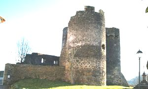
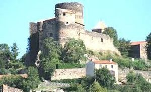
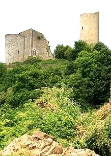
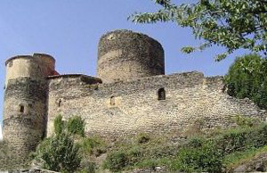
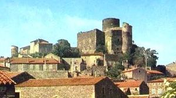
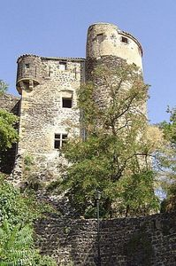
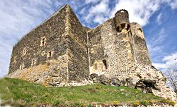
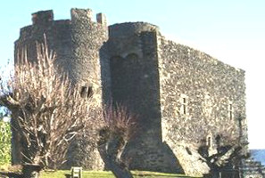
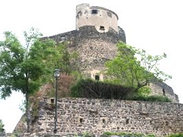

Recensement Jean-Claude Truffet
| Département | 63 — Puy-de-Dôme |
| Canton | St-Germain-Lembron |
| Commune | Boudes |
| Type d'édifice | Vestiges |
| Période d'origine | XII-XIII |









CHALUS , cité au Xe siècle, une fortification Carolingienne existait déjà. Au début du XIe siècle, un château est attesté. Vers 1060, un des fils du seigneur de Châlus entre au monastère de Sauxilange. Au début du XIIIe siècle, le seigneur de Châlus rend hommage au dauphin d'Auvergne. CHALUS-BOUDES, vers 1200, le donjon est dressé par les seigneurs de Châlus. En 1290, à la mort d'Hugues de Châlus, Sansac et Boudes sont partagées entre ses 4 enfants. Vers 1335, les fiefs de Châlus et Boudes sont de nouveau réunis. En 1376 et en 1408, un conflit oppose Hugues de Châlus et Béraud III Dauphin d'Auvergne, Hugues est seigneur de Châlus et de Boudes. Vers 1430, Géraud en est seigneur. Au XVIe siècle, Gabrielle de Châlus porte Boudes par mariage à Thomas du Prat, écuyer et juge d'Issoire, mort en 1540. Pierre de Douhet, sieur de Marlat, épouse Maximilienne Gasparde du Prat, dame de Boudes. En 1669 est cité François de Douhet, chevalier, seigneur, baron de Boudes. En 1670, les Douhet sont seigneurs de Marlat Tour, Esteaux et Boudes. En 1674 Nicolas de Villers achète Chalus et en 1689 François de Douhet, chevalier, mousquetaire noir, est seigneur de Boudes, Peuchaud et La Tourrette. et, après quelques tribulations, David Dufour devient propriétaire. En 1802, le château est acheté par Charbon du Ranquet. A la fin du XXe siècle, la découverte du site est libre à l'extérieur. Le château est une propriété privée non visitable. Au début du XXIe siècle, le château s'ouvre au public. propriété de monsieur Jean Nuger.
Boudes, château-fort construit au XIIe ou au début du XIIIe siècle. C'est un donjon-logis carré de quatre niveaux communiquant par un escalier rampant épargné. La partie haute, débordant de l'enceinte visible de l'extérieur, est plus soignée que la partie basse. Les chaînes d'angle et l'encadrement de la porte sont en pierres de taille bien ajustées. La porte d'entrée s'ouvre dans la façade sud, au premier niveau. La cheminée
d'angle à foyer circulaire, qui se trouvait au 2e niveau a été achetée par le propriétaire du château de Busséol.
Chalus, conservant de très rares témoignages d'aménagements intérieurs civils d'époque: ordonnance de la salle polygonale du corps de logis central, cheminée du donjon et peintures murales du logis sud. Le château occupait autrefois l'ensemble d'une butte commandant la vallée de l'Allier et le bassin du Lembron. Il fut divisé en 2 châteaux et il ne reste aujourd'hui, comme témoin homogène de l'époque médiévale, que la partie antérieure qui défendait l'accès à l'éperon. Ces vestiges sont dominés par un donjon cylindrique construit vers 1300, sur lequel différents corps de logis se sont greffés au XIVe et au XVe siècle. A l'intérieur, chaque étage comporte une salle voûtée en coupole. 2 corps de logis s'articulent au pied du donjon. Le corps de logis sud présente une salle polygonale dite salle du conseil, chaque pan est garni d'un arc de décharge brisé reçu sur colonnettes engagées par l'intermédiaire de chapiteaux.
Seigneur Hugues de Châlus
"
Château-fort de Chalus-Boudes